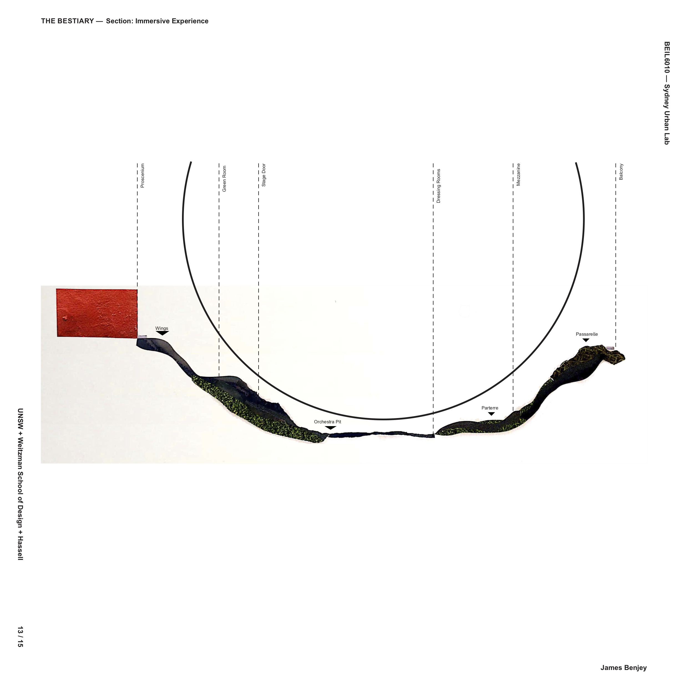
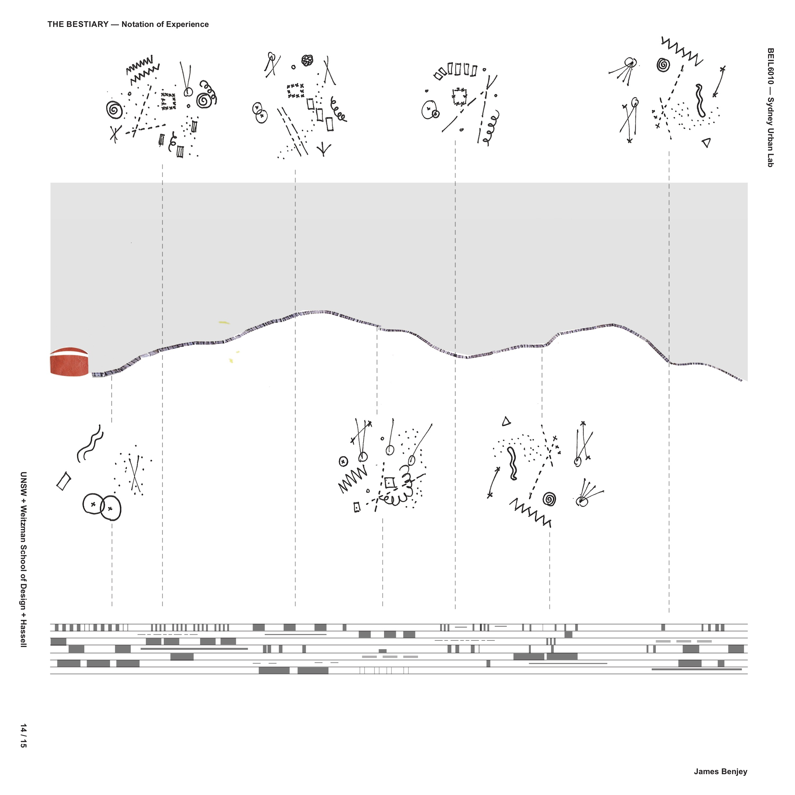
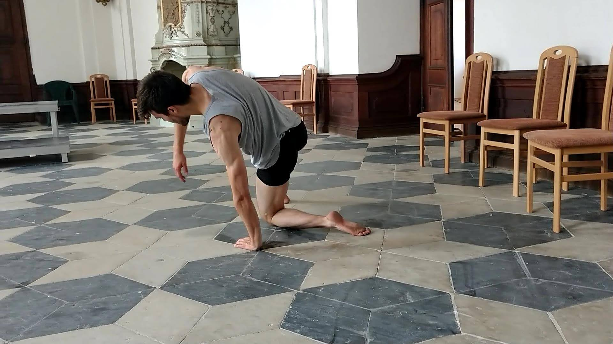
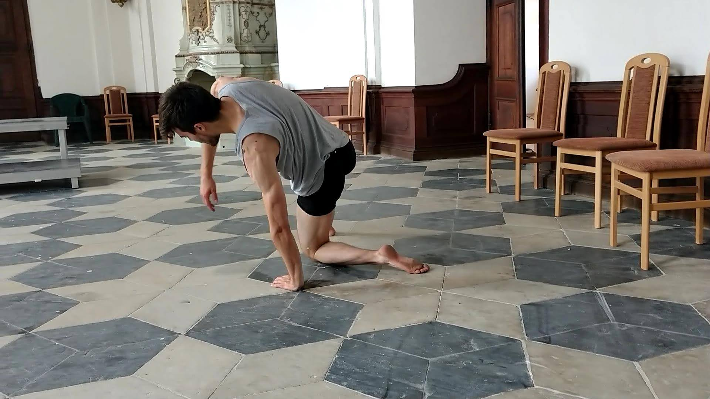

Through performing with dance companies from 2011 until 2019 I had the opportunity to work with many diverse skill sets which required more effective
and divergent systems of communication and yielded more diverse outcomes
when compared to groups consisting of dancers with more homogeneous training backgrounds. These communication skills, used as a basis for user centered research, have been extremely useful in many UX/UI applications.


 
